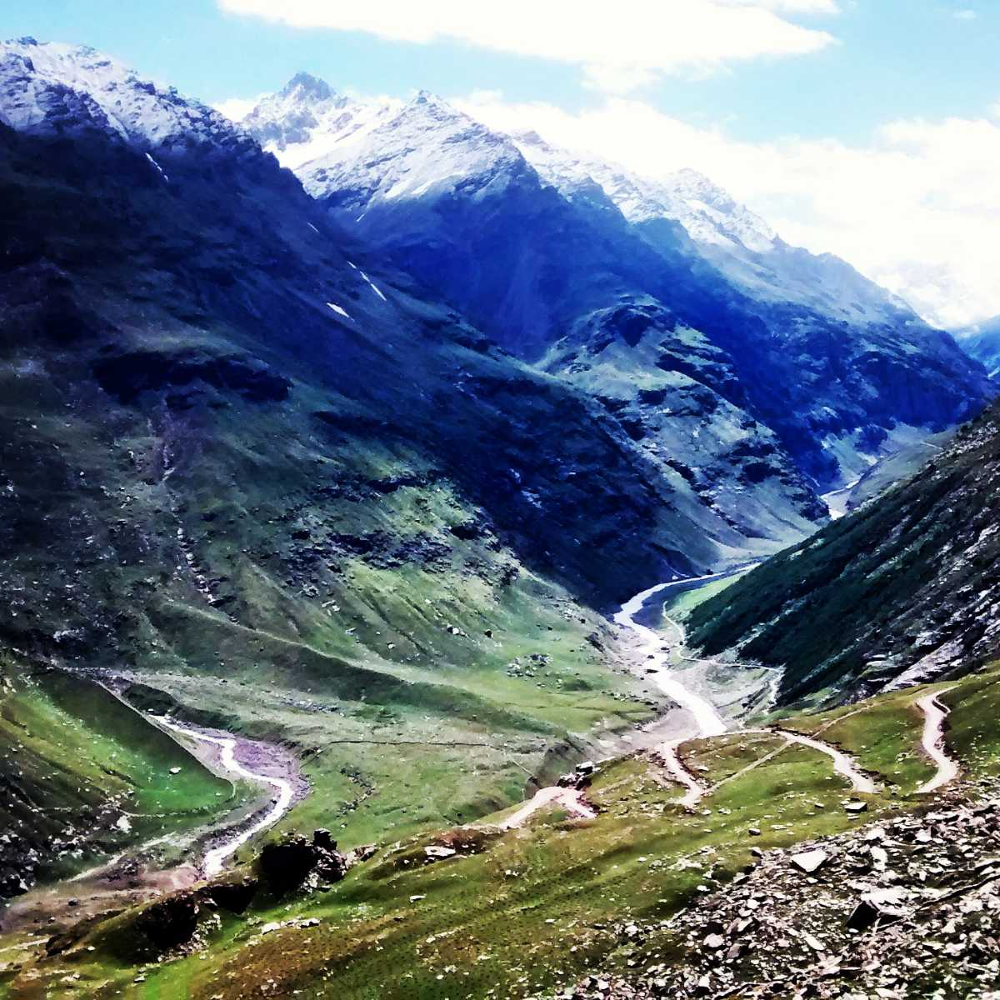

Snow in Rohtang Pass

Manali, Himachal Pradesh

Solang Valley also known as Snow Valley is a perfect place for adventure sports

Beautiful Views of the Mountains in Manali

Beautiful Views of Manali

Beautiful Greenery of Manali
Snow Capped Mountains in Manali